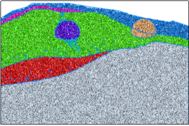
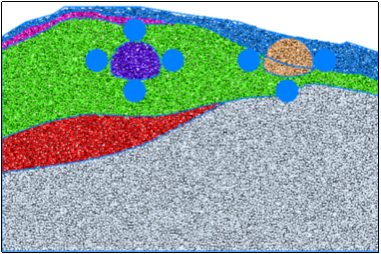
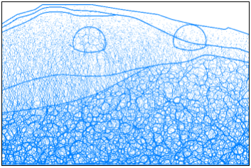
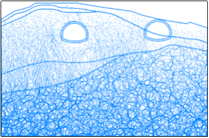
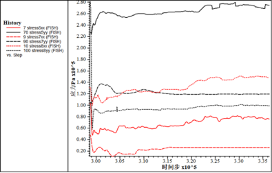
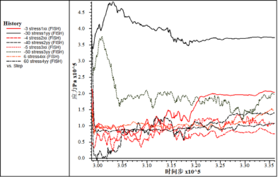
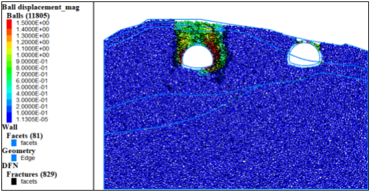

该段隧道定位在SZK3-1、SZK3-2地质钻孔处，主要岩层为风化灰岩，上覆粉质粘土。
(1)初始模型

图1 初始模型

图2 测量点分布
根据工程地质横断面图在CAD中等比例绘制隧道断面图，根据断面图等比例生成的杨梅一隧道出口段离散元模型如图1所示，地层从上到下主要为粉质黏土、全风化灰岩、强风化灰岩、中风化灰岩。图2给出了相关量测点位置信息，测量点顺序按照顺时针标记。
(2)力链分布及调整
隧道围岩强度普遍偏低，因此整体力链数值都是偏小，分布差异受重力影响较大，方向以竖直为主。左右两隧道皆位于风化程度较高岩体内，右侧隧道开挖后调整不明显，左侧隧道开挖后力链调整有冒落拱形自平衡。

图3 初始力链

图4 力链调整
(3)开挖过程应力调整及位移场
表1 初始地应力
量测点 | 水平应力/MPa | 垂直应力/MPa |
1 | 0.21 | 0.34 |
2 | 0.047 | 0.14 |
3 | 0.19 | 0.26 |
4 | 0.15 | 0.38 |
5 | 0.1 | 0.23 |
6 |
|
|
7 | 0.048 | 0.1 |
8 | 0.13 | 0.28 |
图5和图6给出了开挖过程中应力调整的具体信息，1号测量点水平应力在波动中先卸载后加载，竖直应力先加载后卸载。2号测量点水平应力一直处于波动状态，没有明显升降规律，竖直应力发生急剧卸载。3号测量点水平应力卸载，竖直应力先加载后卸载。4号测量点水平应力变化不明显，竖直应力先卸载后加载。5号测量点水平应力卸载，竖向应力加载。7号测量点水平应力卸载，竖向缓慢加载。8号测量点水平应力变化不明显，竖向应力急剧卸载。
从图7中可以看出，由于埋深较浅，岩层风化严重，因此扰动过程中容易发生坍塌，位移量较大，左侧隧道围岩发生大面积塌陷，裂纹扩展严重。

图5 右侧隧道应力调整

图6 左侧隧道应力调整

图7 位移及裂纹扩展